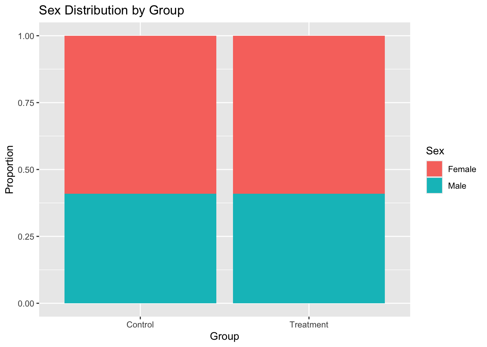
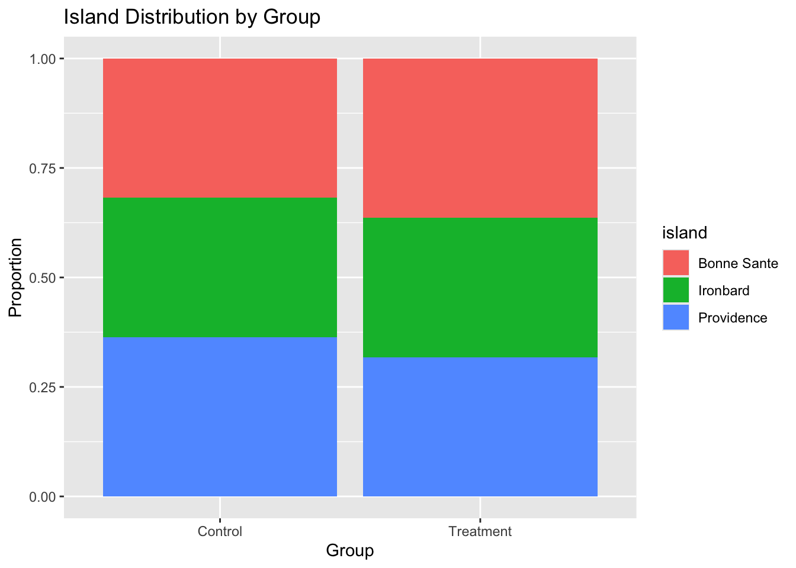
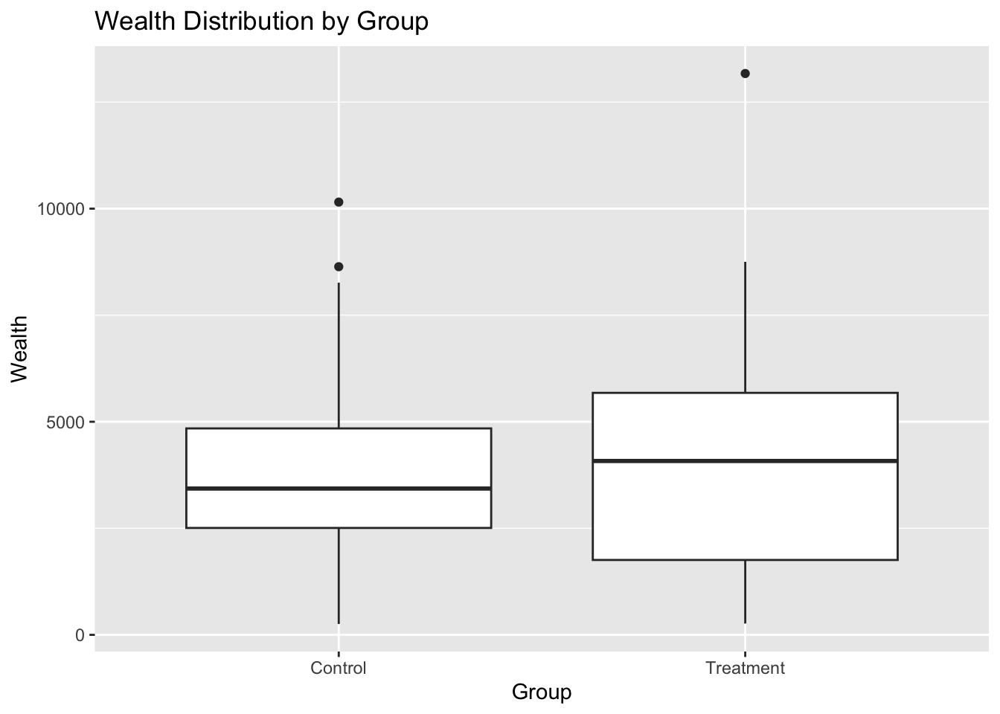
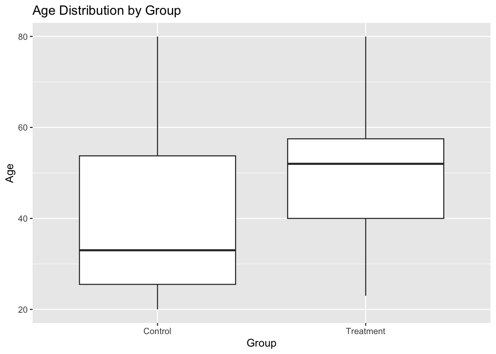
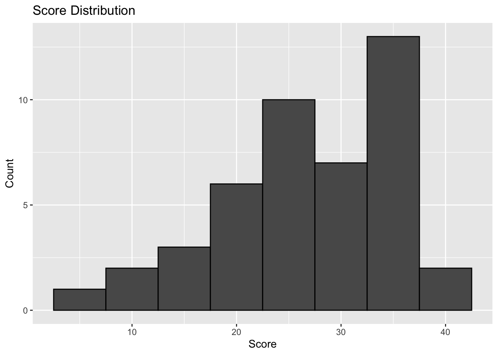
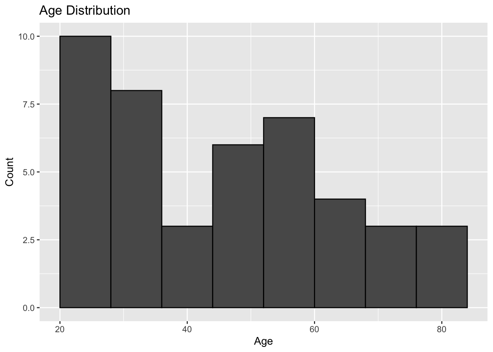
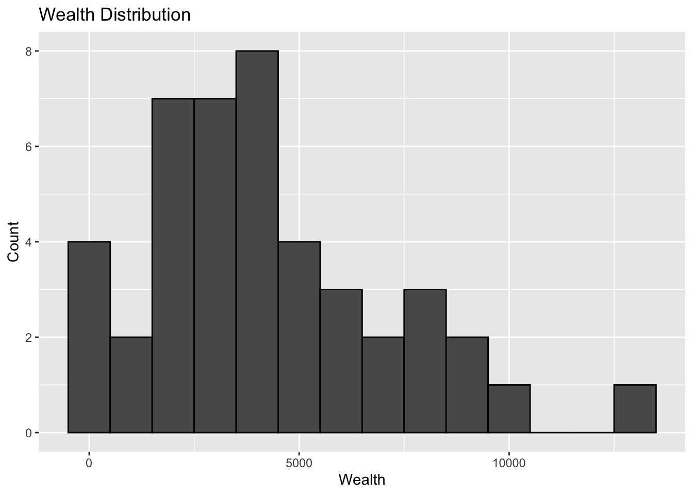
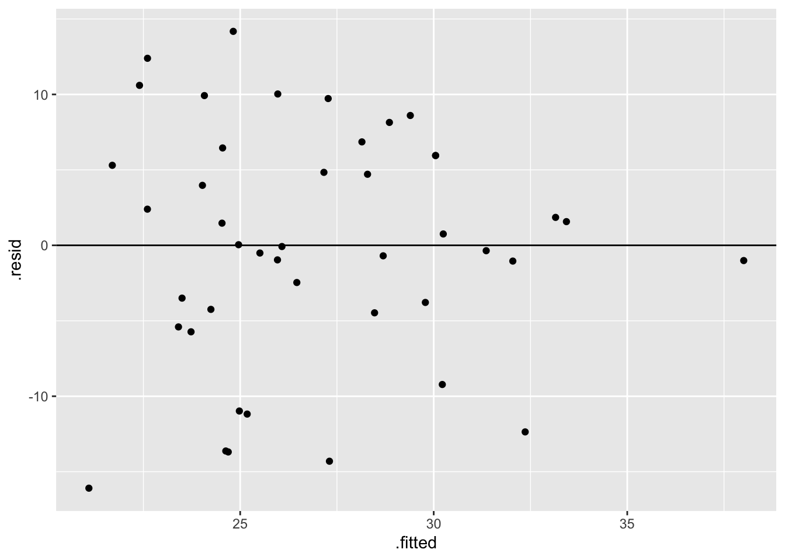
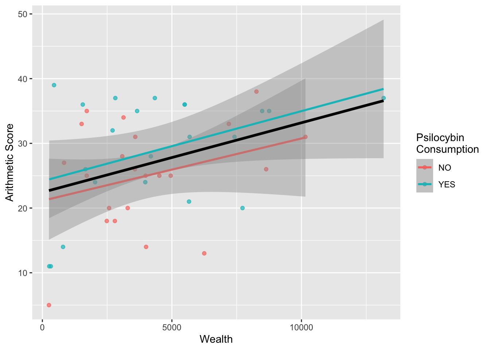

Effect of Psilocybin Mushroom Consumption on Difficult Mental Arithmetic Score
Math058B (Intro. to Biostatistics) Group Project
1 Introduction: Motivation, Background, & Research Question
When crafting our research question, we began with an interest in whether consuming psychedelic mushrooms would have an effect on the ability to perform some sort of mental task. We had prior knowledge that psychedelic mushrooms have a psychological effect often paradoxically associated with both enhanced creativity and distorted cognitive function1. As such, we were curious whether enhanced creativity could aid in performing mental arithmetic tasks or if distorted logic would hinder one’s ability to do mental calculations. With the variables pre-provided by the Islands software2, we chose our explanatory variable as the consumption/lack of consumption of psilocybin mushrooms and our response variable as the score participants received on said difficult mental arithmetic exam. Ultimately, we reached the following research question for our study: do the scores on a difficult mental arithmetic exam that adults 18+ on the Islands receive differ between those who consume 10 grams of psilocybin mushrooms compared to those who do not consume any psilocybin mushrooms?
2 Methods
Planned study design: We will be using an experimental study design. Half of our experiment’s participants will be randomly assigned to receive 10 grams of psilocybin mushrooms, while the other half will be assigned to the control group that will not receive any psilocybin mushrooms.
The target population/participants: We will attempt to generalize our results to all adults (defined as over 18 years old for purposes of this study) on the islands.
The inclusion and exclusion criteria: Our only exclusion criterion is individuals under the age of 18, due to the ethical dilemmas that providing psychedelics to individuals under 18–like children–might pose.
The sampling methods: We will be using random sampling and random assignment. We are going to use two random number generators to select a city and a household, and then randomly pick an adult from that household to be a participant. From all the individuals selected, half will be assigned to the treatment group and the other half will be assigned to the control group. We will try to roughly sample the same number of individuals from each island.
The intervention(s): The consumption/lack of consumption of psilocybin mushrooms (2 levels).
The outcome(s) to be measured: The score received on a difficult mental arithmetic exam (quantitative).
Other demographic variables collected: We will record information on age, gender, wealth, and island of residence for each participant in our study.
The sample size calculation and justification: See “Summary of Power Analysis and Sample Size Determination” section
The randomization (random assignment) methods: We are using random sampling and random assignment, as described above under sampling methods
The blinding methods: We will not be using blinding methods, since we, the researchers, know the assignment of the explanatory variable has no effect on the response variable, and we didn’t have an option to use a placebo for a single-blind test (and using something else as a placebo could have an effect we are unfamiliar with due to the digital format of this study).
The study implementation: We will randomly sample individuals from the islands as outlined above, half of the individuals will take mushrooms (1 minute), and then after the conclusion of the consumption, those individuals will take the ‘Mental Arithmetic Difficult’ test (4 mins). The other half of randomly sampled individuals will only take the ‘Mental Arithmetic Difficult’ test (4 mins).
The statistical methods used to analyze the data: Two-sample t-test.
3 Summary of Power Analysis and Sample Size Determination
We began by analyzing what sample size would give us a power of at least 70% (a 70% chance of correctly rejecting a false null). We based this off of preliminary collected data where we found a sample mean difference of 6.6 points higher for participants who consumed psilocybin mushrooms than for those who did not. We analyzed three scenarios, and found that to obtain both a significant result when the true population difference in means is 6.6 points and a power of approximately 0.7, our sample size should be around 17 per group. However to account for the natural variability that comes from the randomized data collection process, we ultimately decided to collect 22 observations per group (44 total). Based on this sample size and a true alternative difference of 6.6, we estimate the actual power to be 0.807. Since we planned to conduct a two-sided hypothesis test, we were not too worried about the extra directionality that pilot data might suggest when doing a one-sided test. Thus, in the interest of time, we chose to include our pilot study data into the final dataset. However, if this were a real study and not in the islands, we would have most likely collected new random samples as pilot data is usually not included in the full dataset.
Also, as previously mentioned, we used random sampling in order to allow for generalization to the population of individuals on the Islands. We evaluated numerical summaries to reflect the extent to which our generalization worked. We ended up with the exact same ratio of 0.6923077 male to female participants between our treatment and control groups, which were the same sample size, indicating excellent randomization. The treatment group had an average age that was about 10.5 years older than the average age of the control group. However, since the lowest age was 20 and the highest age was 80, so a difference of only 10.5 years–although slightly high–still reflects a success in generalization as when we break age down by group visually in the boxplot below, we see the ranges overlap with the median of the treatment being within the third quartile of the control.
We saw a difference of 370.41 dollars in individual wealth between the two groups. Although this is numerically larger than other comparisons, we expect this sort of variation for a variable like wealth, which ranged from 265 dollars to 13,171 dollars. Overall, our power analysis confirmed that our randomization worked, thus allowing for generalization in the conclusions of this study.
4 Visual and Numerical Summaries of the Variables Collected
Below is a numerical summary table indicating differences in the variables collected between the explanatory groups.
Measure Value
1 Difference in Sex Ratio (male/female) between Treatment & Control 0.00000
2 Difference in Mean Wealth between Treatment & Control 370.40910
3 Difference in Mean Age between Treatment & Control 10.54545We have also provided figures to better visually understand the distribution of the variables collected.




5 Hypothesis Test
Hypothesis Test for Randomization
Our Null Hypothesis for each variable: No true difference in that variable across our control and experimental group or no true relationship between that variable and the two groups (independent relationship).
Alternative Hypothesis: There is a difference in that variable across our control and experimental group or there is a relationship between that variable and the two groups.
Check for Conditions: To check the variables meet the necessary conditions for these tests we have provided histograms of the continuous variables below to show the distributions.



From the distributions above, we see that the distribution of scores, ages, and wealth does have some skewness; however, we should still be able to proceed with our t-test as we have a large sample size (44), and the Central Limit Theorem applies, therefore, we will not be violating the normality condition. Otherwise, we have satisfied random sampling and independence of observations with the way our data has been collected.
For the variable of sex, we meet the conditions for the Chi-square test for sex, as we have a random sample, at least 1 observation in every cell, and at least 5 expected counts in each cell. Consider the Chi-Squared table below to confirm this.
We now conduct t-tests for age and wealth across the treatment and control group, and conduct a chi-squared test for sex. Below is the output of our tests.
Welch Two Sample t-test
data: age by mushrooms
t = -2.0121, df = 41.809, p-value = 0.05068
alternative hypothesis: true difference in means between group NO and group YES is not equal to 0
95 percent confidence interval:
-21.12350565 0.03259656
sample estimates:
mean in group NO mean in group YES
40.59091 51.13636
Welch Two Sample t-test
data: wealth by mushrooms
t = -0.41348, df = 39.902, p-value = 0.6815
alternative hypothesis: true difference in means between group NO and group YES is not equal to 0
95 percent confidence interval:
-2181.109 1440.291
sample estimates:
mean in group NO mean in group YES
4023.318 4393.727
Pearson's Chi-squared test
data: table(select(final_data, sex, mushrooms))
X-squared = 0, df = 1, p-value = 1 mushrooms
sex NO YES
Female 13 13
Male 9 9From the output above, we observe p-values greater than 0.05 for all of our variables compared across our experimental and control groups, suggesting that we fail to reject the null from above. This confirms that our randomization worked and there are no discernible differences in the variables across treatments.
Hypothesis Test for Initial Results of Research Question
Our Null Hypothesis: There is no difference in the true average arithmetic scores between those who consumed psilocybin mushrooms and those that did not.
Alternative Hypothesis: There is a difference in the true average arithmetic scores between those who consumed psilocybin mushrooms and those that did not.
Welch Two Sample t-test
data: score by mushrooms
t = -1.529, df = 41.682, p-value = 0.1338
alternative hypothesis: true difference in means between group NO and group YES is not equal to 0
95 percent confidence interval:
-9.069764 1.251582
sample estimates:
mean in group NO mean in group YES
25.00000 28.90909 From the output, we observe a p-value greater than 0.05—0.1338 > 0.05—indicating that we fail to reject the null hypothesis and we cannot conclude that there is a discernible difference in true average arithmetic scores between those who consumed psilocybin mushrooms and those that did not.
6 Multiple Linear Regression Model
# A tibble: 3 × 5
term estimate std.error statistic p.value
<chr> <dbl> <dbl> <dbl> <dbl>
1 (Intercept) 20.8 2.39 8.73 6.83e-11
2 wealth 0.00104 0.000415 2.50 1.66e- 2
3 mushroomsYES 3.53 2.42 1.46 1.52e- 1
The goal of our multiple linear regression model is to determine whether psilocybin mushroom consumption affects arithmetic scores. We included mushroom consumption because it is the explanatory variable our research question focuses on, and we included wealth because it was the only other variable with a p-value below 0.05, meaning it is statistically discernible. The other variables we collected had high p-values, suggesting they were not statistically discernible, so we excluded them from the model.
The model estimates that, holding mushroom consumption constant, each additional dollar of wealth is associated with a 0.00104 point increase in score. Since the p-value for wealth is below 0.05, wealth is a discernible predictor of score. For mushrooms, the model estimates that consuming them is associated with a 3.53 point higher score, holding wealth constant. However, the p-value for mushrooms is 0.15, which is far greater than 0.05, so this difference is not statistically discernible and we cannot conclude that being in the treatment group rather than the control group causes higher scores. In other words, after controlling for wealth, there is no statistically discernible evidence that consuming 10 grams of psilocybin mushrooms affects mental arithmetic exam scores among adults on the Islands.
We can see this visually in the plot below, which shows the relationship between wealth and score, with treatment group represented by color. The black line is the regression line fit to all participants, and the two colored lines are fit separately to each group. All of the lines slope upward, reflecting the positive relationship between wealth and score. Additionally, all the shaded confidence bands for the two groups overlap significantly, and each colored line seems to fall within the confidence band of the other. This indicates that the estimated effect of mushroom consumption is small relative to its standard error, which explains why the p-value for mushrooms is relatively high.

7 Limitations
As mentioned in the methods section, we attempted to conduct random sampling to the best of our ability. We used a random number generator to select a city and a household on an island, and then randomly pick an adult from that household to be a participant. Although we attempted to randomly sample all adults in The Islands, it was not truly random. Since we tried to sample roughly the same number of individuals from each island, our sample may not perfectly represent the actual population distribution of The Islands. For example, if one island has a much larger adult population than another, then sampling the same number of people from both islands could over represent adults from smaller islands and under represent adults from larger islands. Therefore, our results may not generalize perfectly to all adults on The Islands.
As seen from the randomization hypothesis tests above, the variables we collected seem to be roughly balanced across the two groups. In other words, our random assignment process was effective in distributing the variables across the treatment and control group, and in reducing the concern of confounding variables. With this knowledge, we can state that we do not expect major limitations in our ability to infer a causal relationship between psilocybin mushroom and arithmetic scores, due to the effectiveness of the random assignment process. However, this must be taken with caution as this experiment calculated a non-significant p-value, which does not support a causal relationship between the two variables.
One potential limitation of this study that we believe might hinder our ability to answer the research claims we set out to study is the sample size. Although we calculated a non-significant p-value, a closer inspection of the data reveals that the mean arithmetic score for those in the treatment group is higher than that of the control group. While it is possible that this difference can simply be due to the natural variability of the data–the argument for the non-significant p-value–it could also suggest an underlying trend that becomes significant at a larger sample size. Thus, taking a larger sample might provide a better answer to the relationship between psilocybin mushroom and arithmetic scores, making the sample size a potential limitation of this experiment.
8 Results & Conclusions
Ultimately, since our p-value was not statistically discernible at a 95% discernibility level, we failed to reject the null hypothesis. That is, we failed to reject the conclusion that there is no true difference in average test score on a difficult arithmetic test between individuals aged 18+ on the Islands who consume psilocybin mushrooms and those who do not. This does not, however, mean that we conclude the null hypothesis is true, rather that we are unable to make any concrete claims based on our data. Note that, although we are not able to make any conclusions, our study was crafted so that, had we been able to reject the null, we would have been able to generalize to the population due to our randomization.
Despite our inability to make a claim regarding our research question, we encourage future replication of this study but with some additions that might better provide information about the relationship between the two variables. This may manifest as collecting information on level of education of participants or using different dosages of mushroom–as various dosages have been known to have various effects on cognition3–or even conducting a paired t-test to reduce the between-subject variability. Although there is always room for improvements and further additions, and despite our lack of a conclusive claim, we hope that the analysis conducted as part of the process is able to provide a future framework for analyzing this, or related research questions.
Footnotes
Bonnieux, Justin N et al. “Psilocybin’s effects on cognition and creativity: A scoping review.” Journal of psychopharmacology (Oxford, England) vol. 37,7 (2023): 635-648. doi:10.1177/02698811231179801↩︎
See here for more information about the Islands software: https://espace.library.uq.edu.au/data/UQ_271031/UQ271031_OA.pdf?Expires=1792789601&Key-Pair-Id=APKAJKNBJ4MJBJNC6NLQ&Signature=FO3EiGsfbR2go9dkPJH3b1l9hrloZZqHp2GzXrRrCBfiTCFgrMBLOTkTpBtcyEU3dmmF3y6bDkcgAYJWpMJpQgDGDGJu8MC30dcoyWr8995Q6gL280R50VEYLxw3G8mAAFvViduGNogdlsNFvVYsSap22JyMwQnXLQ4Ly2rFjO4THWjQ9TeoKlIsapkvDDVQV-gMVrDN17QAdhrUsNzkiXbM1wSGNZPwX5Kzuh64qmTwrnCPUqM7UBvAZ6pqzPdVHeFx9RriHIQVySR3Ee64VKeQVrAsvlimSQDcfAZX8SXvxaR9NYxHa05G3WUQz6kK9KWGLkXDnGieN37HFvog__↩︎
Bonnieux et al.↩︎